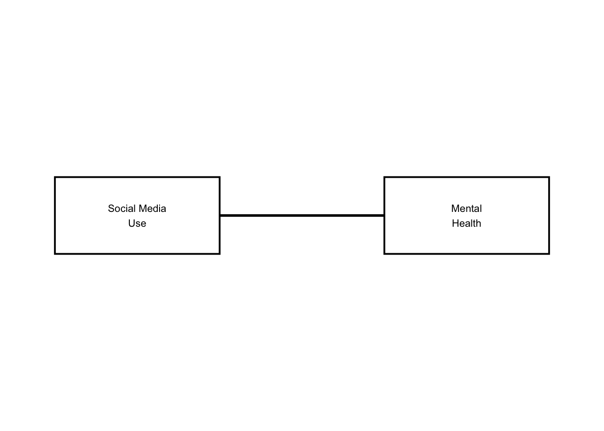
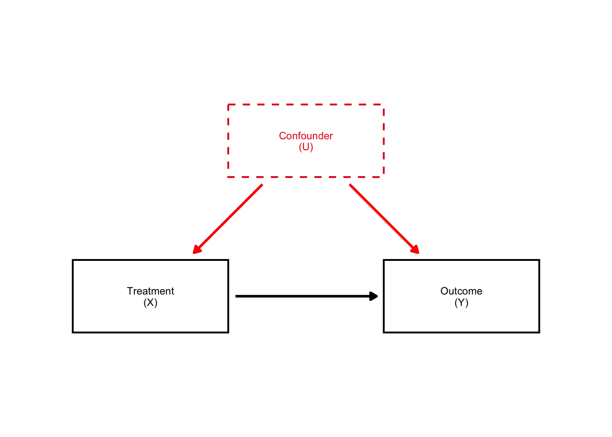
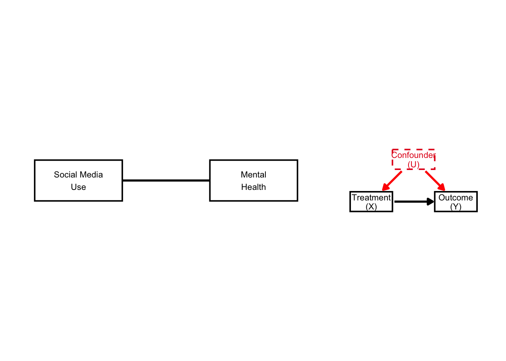
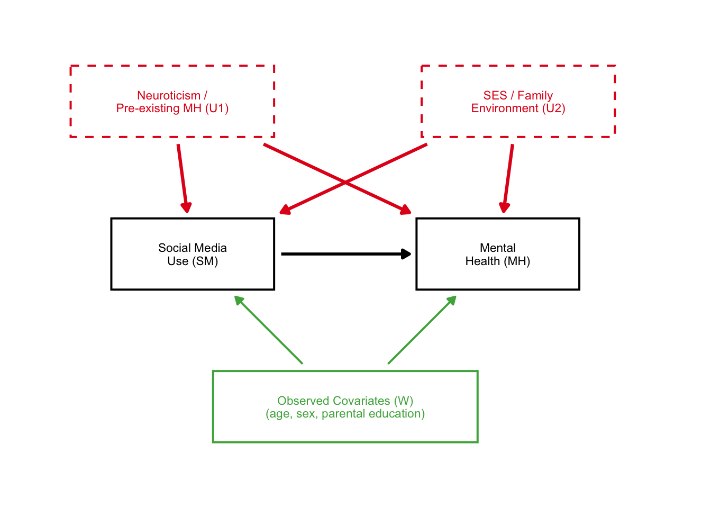
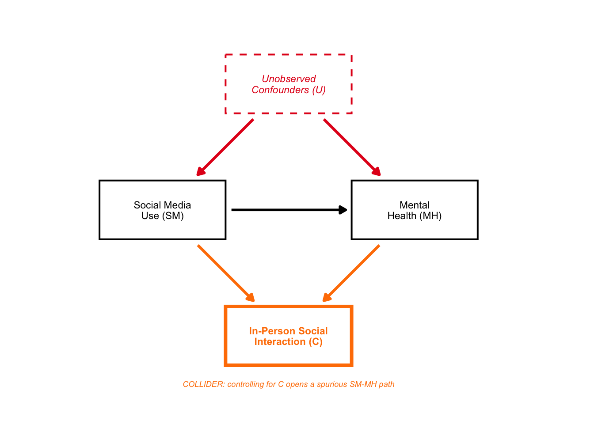
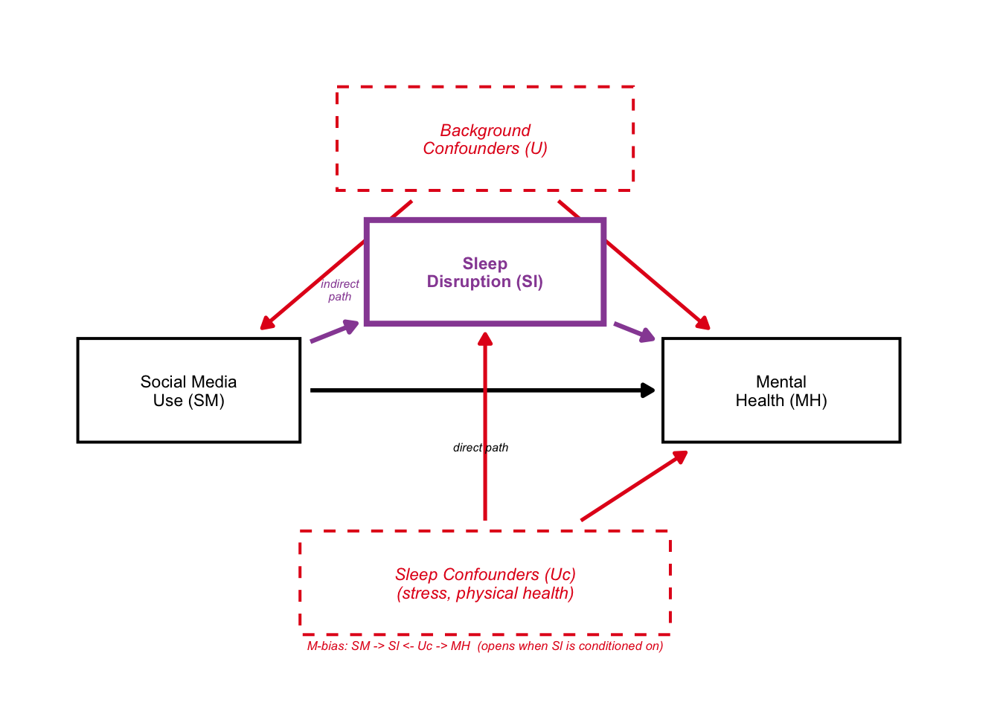
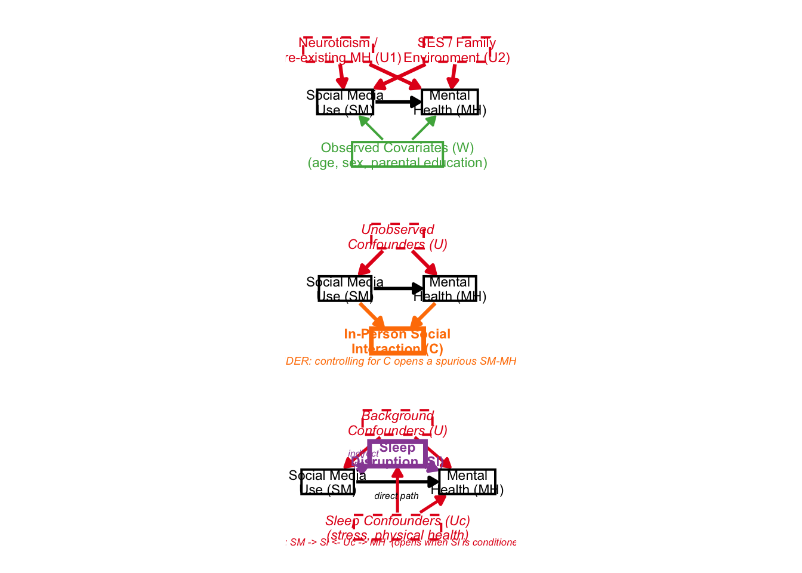

In Portfolio 4, we used dagitty to formally define and analyze three causal DAG structures for the social media -> mental health question: DAG A: Unmeasured confounding (U1, U2, W) DAG B: Collider bias (in-person social interaction) DAG C: Mediator conditioning (sleep disruption)
Dagitty is great for the logic (e.g., adjustment sets, d-separation, path analysis). But its built-in plots and ggdag (the main visualization package) only draws circular nodes.
This portfolio piece is about visualizing those same three DAGs beautifully using dagbox. It was written entirely by Claude Code (Anthropic). The package is available at: github.com/haleylam0704/dagbox
devtools::install_github("haleylam0704/dagbox")## Using GitHub PAT from the git credential store.## Skipping install of 'dagbox' from a github remote, the SHA1 (40537005) has not changed since last install.
## Use `force = TRUE` to force installationlibrary(dagbox)
library(ggplot2)
library(patchwork)When drawing an arrow between two boxes in ggplot2, one way is to connect the center coordinates of each box with annotate(“segment”). However, the arrowhead ends up buried under the boxes. Let’s see how it works:
naive <- ggplot() +
coord_fixed(xlim=c(0,5), ylim=c(0.8,2.2)) +
theme_void() +
annotate("segment",
x=1, y=1.5, xend=4, yend=1.5,
arrow=arrow(length=unit(0.3,"cm"), type="closed"),
linewidth=1) +
# Boxes drawn on top (so the arrowhead is now hidden underneath)
annotate("rect", xmin=0.25, xmax=1.75, ymin=1.15, ymax=1.85,
fill="white", color="black", linewidth=0.7) +
annotate("text", x=1, y=1.5, label="Social Media\nUse", size=3) +
annotate("rect", xmin=3.25, xmax=4.75, ymin=1.15, ymax=1.85,
fill="white", color="black", linewidth=0.7) +
annotate("text", x=4, y=1.5, label="Mental\nHealth", size=3)
naive
As you can see, there are no arrows! Dagbox fixes this by computing where the line exits each box’s border (with some pretty complicated math!) and using those exit points as the actual arrow start and end. The math lives in an internal function called edge_endpoints() (that users never see).
We need to input two dataframes.
NODES data frame — one row per variable: Required: id, label, x, y Optionally: latent (TRUE = dashed red border, the DAG convention for unobserved variables), color, width, height, fontface, border_lwd (thicker border to highlight special nodes)
EDGES data frame — one row per arrow: Required: from, to (using node ids) Optional: color, linewidth, linetype
dagbox_plot() will return a standard ggplot object, so you can keep adding to it with + just like any other ggplot2 figure.
Here is a simple example, before moving on to the full examples:
nodes_simple <- data.frame(
id = c("X", "Y", "U"),
label = c("Treatment\n(X)", "Outcome\n(Y)", "Confounder\n(U)"),
x = c(1, 4, 2.5),
y = c(1.5, 1.5, 3),
latent = c(FALSE, FALSE, TRUE)
)
edges_simple <- data.frame(
from = c("X", "U", "U"),
to = c("Y", "X", "Y"),
color = c("black", "red", "red")
)
simple_dag <- dagbox_plot(nodes_simple, edges_simple)
simple_dag
Look how beautiful that DAG is! The arrows are perfectly aligned and they are in rectangular boxes. Amazing.
Here is the naive vs. simple DAGs side by side:
naive + simple_dag
We now have visible arrows (and dashed boxes).
From Portfolio 4: dagitty confirmed that no valid adjustment set exists when U1 and U2 are latent. W alone is insufficient. Here we visualize exactly that structure.
Nodes: SM = Social media use MH = Mental health U1 = Neuroticism / pre-existing MH (latent) U2 = SES / family environment (latent) W = Observed covariates
COL_BIAS <- "#E41A1C" # red — confounders
COL_OBS <- "#4DAF4A" # green — observed covariates
nodes_A <- data.frame(
id = c("SM", "MH",
"U1", "U2",
"W"),
label = c("Social Media\nUse (SM)", "Mental\nHealth (MH)",
"Neuroticism /\nPre-existing MH (U1)", "SES / Family\nEnvironment (U2)",
"Observed Covariates (W)\n(age, sex, parental education)"),
x = c(1.0, 4.0, 0.8, 4.2, 2.5),
y = c(1.5, 1.5, 3.0, 3.0, 0.0),
width = c(1.6, 1.6, 2.0, 1.9, 2.6),
latent = c(FALSE,FALSE,TRUE, TRUE, FALSE),
color = c("black","black", COL_BIAS, COL_BIAS, COL_OBS),
text_color = c("black","black", COL_BIAS, COL_BIAS, COL_OBS)
)
edges_A <- data.frame(
from = c("SM", "U1", "U1", "U2", "U2", "W", "W"),
to = c("MH", "SM", "MH", "SM", "MH", "SM", "MH"),
color = c("black", COL_BIAS, COL_BIAS, COL_BIAS, COL_BIAS, COL_OBS, COL_OBS),
linewidth = c(1.0, 1.1, 1.1, 1.1, 1.1, 0.7, 0.7)
)
dag_A <- dagbox_plot(nodes_A, edges_A,
xlim=c(-0.4, 5.6), ylim=c(-0.7, 3.7))
dag_A
Great! Here we see the two unobserved confounders very clearly affected the causal structure.
In portfolio 4, we showed with dagitty simulation that controlling for C (in-person social interaction) drops the estimated SM->MH effect from 0.29 to 0.08 — even though we defined the true effect as 0.30.
COL_COLLIDER <- "#FF7F00" # orange — collider
nodes_B <- data.frame(
id = c("SM", "MH",
"U", "C"),
label = c("Social Media\nUse (SM)", "Mental\nHealth (MH)",
"Unobserved\nConfounders (U)",
"In-Person Social\nInteraction (C)"),
x = c(1.0, 4.0, 2.5, 2.5),
y = c(1.5, 1.5, 3.0, 0.0),
latent = c(FALSE,FALSE,TRUE, FALSE),
color = c("black","black", COL_BIAS, COL_COLLIDER),
text_color = c("black","black", COL_BIAS, COL_COLLIDER),
fontface = c("plain","plain","italic", "bold"),
border_lwd = c(0.7, 0.7, 0.7, 1.4) # thick border highlights the collider
)
edges_B <- data.frame(
from = c("SM", "U", "U", "SM", "MH"),
to = c("MH", "SM", "MH", "C", "C"),
color = c("black", COL_BIAS, COL_BIAS, COL_COLLIDER, COL_COLLIDER),
linewidth = c(1.0, 1.1, 1.1, 1.1, 1.1)
)
dag_B <- dagbox_plot(nodes_B, edges_B,
xlim=c(-0.4, 5.6), ylim=c(-0.75, 3.7)) +
annotate("text", x=2.5, y=-0.57,
label="COLLIDER: controlling for C opens a spurious SM-MH path",
size=2.4, color=COL_COLLIDER, fontface="italic", hjust=0.5)
dag_B
Again, a beautiful DAG!
From Portfolio 4: dagitty showed the valid adjustment sets do NOT include sleep (Sl). Conditioning on Sl blocks the indirect path AND opens an M-bias path through Uc.
COL_MEDIATOR <- "#984EA3" # purple — mediator
nodes_C <- data.frame(
id = c("SM", "Sl", "MH",
"U", "Uc"),
label = c("Social Media\nUse (SM)", "Sleep\nDisruption (Sl)", "Mental\nHealth (MH)",
"Background\nConfounders (U)",
"Sleep Confounders (Uc)\n(stress, physical health)"),
x = c(0.5, 2.5, 4.5, 2.5, 2.5),
y = c(1.5, 2.3, 1.5, 3.2, 0.2),
width = c(1.5, 1.6, 1.6, 2.0, 2.5),
latent = c(FALSE,FALSE,FALSE,TRUE, TRUE),
color = c("black", COL_MEDIATOR, "black", COL_BIAS, COL_BIAS),
text_color = c("black", COL_MEDIATOR, "black", COL_BIAS, COL_BIAS),
fontface = c("plain", "bold", "plain", "italic", "italic"),
border_lwd = c(0.7, 1.4, 0.7, 0.7, 0.7) # thick border on mediator
)
edges_C <- data.frame(
from = c("SM", "Sl", "SM", "U", "U", "Uc", "Uc"),
to = c("Sl", "MH", "MH", "SM", "MH", "Sl", "MH"),
color = c(COL_MEDIATOR, COL_MEDIATOR, "black", COL_BIAS, COL_BIAS, COL_BIAS, COL_BIAS),
linewidth = c(1.1, 1.1, 1.0, 0.9, 0.9, 0.9, 0.9)
)
dag_C <- dagbox_plot(nodes_C, edges_C,
xlim=c(-0.4, 5.6), ylim=c(-0.4, 3.85)) +
annotate("text", x=1.52, y=2.18,
label="indirect\npath", size=2.1,
color=COL_MEDIATOR, fontface="italic", lineheight=0.85) +
annotate("text", x=2.47, y=1.12,
label="direct path", size=2.1,
color="black", fontface="italic") +
annotate("text", x=2.5, y=-0.22,
label="M-bias: SM -> Sl <- Uc -> MH (opens when Sl is conditioned on)",
size=2.2, color=COL_BIAS, fontface="italic", hjust=0.5)
dag_C
Lastly, we can combine all three figures:
combined <- dag_A / dag_B / dag_C
theme = theme(
plot.title = element_text(face="bold", size=13),
plot.subtitle = element_text(size=9, color="gray35", lineheight=1.2)
)
combined
It looks a bit scrunched up, but the idea was there. This package would be pretty useful for creating beautiful DAGs in the future!